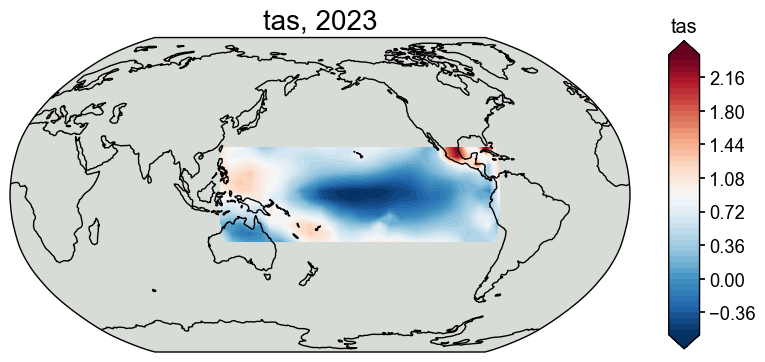
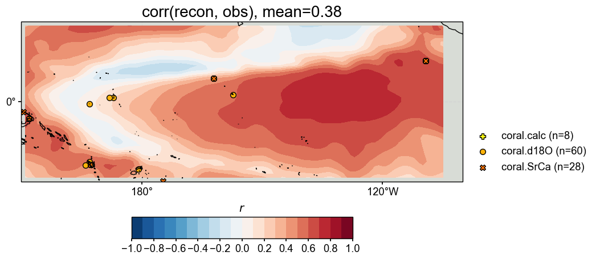

Reconstructing the tropical Pacific SST with PAGES2k#
[1]:
%load_ext autoreload
%autoreload 2
import cfr
[2]:
job = cfr.ReconJob()
job.load_proxydb('PAGES2kv2')
[3]:
job.filter_proxydb(by='ptype', keys=['coral'])
fig, ax = job.proxydb.plot(plot_count=True)

[4]:
job.annualize_proxydb(months=[12, 1, 2], ptypes=['coral'], verbose=True)
>>> job.configs["annualize_proxydb_months"] = [12, 1, 2]
>>> job.configs["annualize_proxydb_ptypes"] = ['coral']
Annualizing ProxyDatabase: 100%|██████████| 104/104 [00:02<00:00, 43.99it/s]
>>> 99 records remaining
>>> job.proxydb updated
[5]:
job.center_proxydb(verbose=True, ref_period=(1951, 2000))
>>> job.configs["proxydb_center_ref_period"] = (1951, 2000)
Centering each of the ProxyRecord: 100%|██████████| 99/99 [00:00<00:00, 1250.35it/s]
>>> job.proxydb updated
[6]:
job.load_clim(
tag='obs',
path_dict={
'tas': 'gistemp1200_GHCNv4_ERSSTv5',
},
rename_dict={'tas': 'tempanomaly'},
anom_period=(1951, 1980),
verbose=True,
)
>>> job.configs["obs_path"] = {'tas': 'gistemp1200_GHCNv4_ERSSTv5'}
>>> job.configs["obs_rename_dict"] = {'tas': 'tempanomaly'}
>>> job.configs["obs_anom_period"] = [1951, 1980]
>>> job.configs["obs_lat_name"] = lat
>>> job.configs["obs_lon_name"] = lon
>>> job.configs["obs_time_name"] = time
>>> The target file seems existed at: ./data/gistemp1200_GHCNv4_ERSSTv5.nc.gz . Loading from it instead of downloading ...
>>> obs variables ['tas'] loaded
>>> job.obs created
[7]:
job.annualize_clim(tag='obs', months=[12, 1, 2], verbose=True)
job.regrid_clim(tag='obs', nlat=42, nlon=63, verbose=True)
job.crop_clim(tag='obs', lat_min=-20, lat_max=20, lon_min=150, lon_max=260, verbose=True)
fig, ax = job.obs['tas'][0].plot(
projection='PlateCarree',
latlon_range=(-20, 20, 150, 260),
)
>>> job.configs["obs_annualize_months"] = [12, 1, 2]
>>> Processing tas ...
>>> job.obs updated
>>> job.configs["obs_regrid_nlat"] = 42
>>> job.configs["obs_regrid_nlon"] = 63
>>> Processing tas ...
>>> job.configs["obs_lat_min"] = -20
>>> job.configs["obs_lat_max"] = 20
>>> job.configs["obs_lon_min"] = 150
>>> job.configs["obs_lon_max"] = 260
>>> Processing tas ...

[10]:
job.prep_graphem(
recon_period=(1871, 2000), # period to reconstruct
calib_period=(1901, 2000), # period for calibration
verbose=True,
)
>>> job.configs["recon_period"] = [1871, 2000]
>>> job.configs["calib_period"] = [1901, 2000]
>>> job.graphem_params["recon_time"] created
>>> job.graphem_params["calib_time"] created
>>> job.graphem_params["field_obs"] created
>>> job.graphem_params["calib_idx"] created
>>> job.graphem_params["field"] created
>>> job.graphem_params["df_proxy"] created
>>> job.graphem_params["proxy"] created
>>> job.graphem_params["lonlat"] created
[11]:
%%time
job.run_graphem(
save_dirpath='./recons/graphem-real-pages2k',
graph_method='neighborhood',
cutoff_radius=1500,
verbose=True,
)
>>> job.configs["save_dirpath"] = ./recons/graphem-real-pages2k
>>> job.configs["graph_method"] = neighborhood
>>> job.configs["cutoff_radius"] = 1500
Computing a neighborhood graph with R = 1500.0 km
Estimating graph using neighborhood method
Running GraphEM:
EM | dXmis: 0.0030; rdXmis: 0.0046: 5%|▌ | 10/200 [06:32<2:04:15, 39.24s/it]
GraphEM.EM(): Tolerance achieved.
job.graphem_solver created and saved to: None
>>> job.recon_fields created
>>> Reconstructed fields saved to: ./recons/graphem-real-pages2k/job_r01_recon.nc
CPU times: user 35min 48s, sys: 31min 41s, total: 1h 7min 29s
Wall time: 6min 32s
[12]:
res = cfr.ReconRes('./recons/graphem-real-pages2k')
res.load(['nino3.4', 'tas'], verbose=True)
>>> ReconRes.recons["nino3.4"] created
>>> ReconRes.da["nino3.4"] created
>>> ReconRes.recons["tas"] created
>>> ReconRes.da["tas"] created
[22]:
target = cfr.ClimateField().fetch('20CRv3/tas', vn='air').rename('tas').get_anom((1951, 1980)).annualize(months=[12, 1, 2])
>>> The target file seems existed at: ./data/air.2m.mon.mean.nc . Loading from it instead of downloading ...
[25]:
res.recons['tas'].da
[25]:
<xarray.DataArray 'tas' (time: 130, lat: 10, lon: 19)>
array([[[-0.34814229, -0.41927609, -0.3585892 , ..., -0.44350183,
-0.39055735, -0.32868234],
[-0.26379911, -0.30904029, -0.21782858, ..., -0.4111794 ,
-0.34129104, -0.28735734],
[-0.16544102, -0.13647402, -0.15081553, ..., -0.40595759,
-0.35500062, -0.35290901],
...,
[ 0.01239464, -0.05833879, -0.18043551, ..., -0.45478115,
-0.40417941, -0.3628104 ],
[ 0.01461401, -0.04001341, -0.1168426 , ..., -0.41836924,
-0.40621078, -0.36283994],
[ 0.04010769, -0.02068438, -0.06457325, ..., -0.41424202,
-0.45454396, -0.01612984]],
[[-0.26423848, -0.44020304, -0.44715032, ..., -0.1653251 ,
-0.06744202, 0.01776519],
[-0.36305615, -0.38552776, -0.34001587, ..., -0.09640008,
-0.01282309, 0.04001044],
[-0.30425279, -0.28039726, -0.25293545, ..., -0.14510752,
-0.09216432, -0.08606405],
...
[ 0.48885661, 0.25693524, 0.03431827, ..., -0.15656626,
-0.00544818, 0.11666099],
[ 0.70569528, 0.535692 , 0.3408428 , ..., -0.05664461,
-0.00890167, -0.01737314],
[ 1.03997422, 0.92904693, 0.74443571, ..., -0.33141128,
-0.1353176 , 0.71676951]],
[[-0.49687711, -0.28409303, -0.0691612 , ..., 0.41029201,
0.50971939, 0.52981525],
[ 0.03647484, 0.19924551, 0.42368657, ..., 0.53520531,
0.62759986, 0.65675547],
[ 0.46950611, 0.58203734, 0.66500673, ..., 0.583168 ,
0.6696312 , 0.63530405],
...,
[ 0.50048721, 0.37536364, 0.22783387, ..., -0.54668887,
-0.40135297, -0.31661333],
[ 0.49105587, 0.4054258 , 0.31084608, ..., -0.3776176 ,
-0.44495793, -0.37750227],
[ 0.52987391, 0.47885222, 0.39494447, ..., -0.36036223,
-0.59462654, 0.42798708]]])
Coordinates:
* time (time) int64 1871 1872 1873 1874 1875 ... 1996 1997 1998 1999 2000
* lat (lat) float64 -19.76 -15.37 -10.98 -6.585 ... 10.98 15.37 19.76
* lon (lon) float64 151.0 156.8 162.6 168.4 ... 238.1 243.9 249.7 255.5[26]:
# validate the reconstruction against 20CR
stat = 'corr'
valid_fd = res.recons['tas'].compare(
target, stat=stat,
timespan=(1874, 1900),
)
valid_fd.plot_kwargs.update({'cbar_orientation': 'horizontal', 'cbar_pad': 0.1})
fig, ax = valid_fd.plot(
title=f'{stat}(recon, obs), mean={valid_fd.geo_mean().value[0,0]:.2f}',
projection='PlateCarree',
latlon_range=(-20, 20, 150, 260),
plot_cbar=True,
plot_proxydb=True, proxydb=job.proxydb,
proxydb_lgd_kws={'loc': 'lower left', 'bbox_to_anchor': (1, 0)},
)
cfr.showfig(fig)
cfr.savefig(fig, f'./figs/graphem_{stat}_recon_obs.pdf')

Figure saved at: "figs/graphem_corr_recon_obs.pdf"
[27]:
bc09 = cfr.EnsTS().fetch('BC09_NINO34')
bc09_ann = bc09.annualize(months=[12, 1, 2])
[28]:
fig, ax = res.recons['nino3.4'].compare(bc09_ann, timespan=(1874, 1900)).plot_qs()
ax.set_xlim(1850, 1900)
ax.set_ylim(-3, 4)
ax.set_ylabel('NINO3.4 [K]')
cfr.showfig(fig)
cfr.savefig(fig, f'./figs/graphem_corr_recon_BC09.pdf')

Figure saved at: "figs/graphem_corr_recon_BC09.pdf"
[ ]:
inst = job.graphem_params['calib_idx']
G_L = cfr.graphem.Graph(
lonlat = job.graphem_params['lonlat'],
field = job.graphem_solver.field_r[inst],
proxy = job.graphem_params['proxy'][inst,:])
G_L.glasso_adj(target_FF=3,target_FP=4)
[ ]:
job.graphem_params['proxy'][inst, :].shape
[ ]:
job.graphem_params['lonlat'].shape
[ ]: